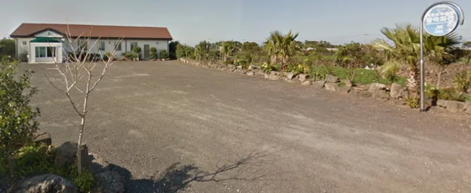

No good counter-argument has been published by the Watchtower.
A jury in Alameda County awarded her over $28 million. At the time it was the largest US award to one victim in a church abuse case.
The jury found the Watchtower and a Fremont congregation negligent. A known molester had been left in field service with children.
On appeal the punitive award was reversed. The negligence findings stood, along with about $2.8 million.
The case settled in 2015.
Judge Joan Lewis in San Diego entered a default judgment of $13.5 million. That included $10.5 million in punitive damages.
It followed a refusal to obey court orders. The orders sought an internal database of child abuse files.
Those files answer to a letter of March 14, 1997, telling congregations to report known molesters to headquarters. The default was later reversed on appeal, in favour of lesser sanctions.
The case over the same man, Gonzalo Campos, ran on to a sealed settlement. He had abused at least eight children, and was put back in good standing again and again.
The files exist. The Watchtower fights hard to keep them sealed.
It settles when a court finally forces them open.
They have never been found to shelter abusers as policy. The punitive award in Conti fell precisely because malice was not proven.
Courts have split on whether a church must warn members about sins confessed in confidence. Clergy confidence is an old protection, and every faith leans on it.
Refusing discovery shielded thousands of uninvolved people named in church files. And a settlement is ordinary risk management, not a confession.
Strong for you, if you state it accurately. The verdicts, the sanctions and the 1997 letter are court record.
The negligence finding in Conti survived appeal. Give both numbers.
The $28 million without the $2.8 million outcome is misleading. So is the Lopez default without its reversal.
What no one has answered is the pattern. There is a standing file of abusers, and it opens only under court order.
"There is a file at headquarters listing known abusers. Why did it take a court order to open it?"

No court has found a policy of hiding abuse. The big Conti award was cut.
The Watchtower's defense is that no court has found it shelters abusers as policy. In Conti the big award fell, and it fell because malice was not proven.
Appeal courts have split on a real question. Must a church warn members about a member's past sins, told in secret? Clergy confidence is an old protection, and every faith leans on it. Refusing to hand over the files shielded thousands of people who were named but not involved. That is not the same as hiding a cover-up. And a settlement is a way to manage risk, not a confession.
Strong for you, if you give both numbers: $28 million, then $2.8 million.
The verdicts, the sanctions and the 1997 letter are court record. The negligence finding in Conti survived appeal.
Graded unrefuted rather than admitted, because the organization contests fault and won real reductions on appeal. State both sides of each number. The $28 million figure without the $2.8 million outcome is misleading. So is the Lopez default without its later reversal.
The unanswered core is the pattern. There is a standing internal file of abusers, and it opens only under compulsion.